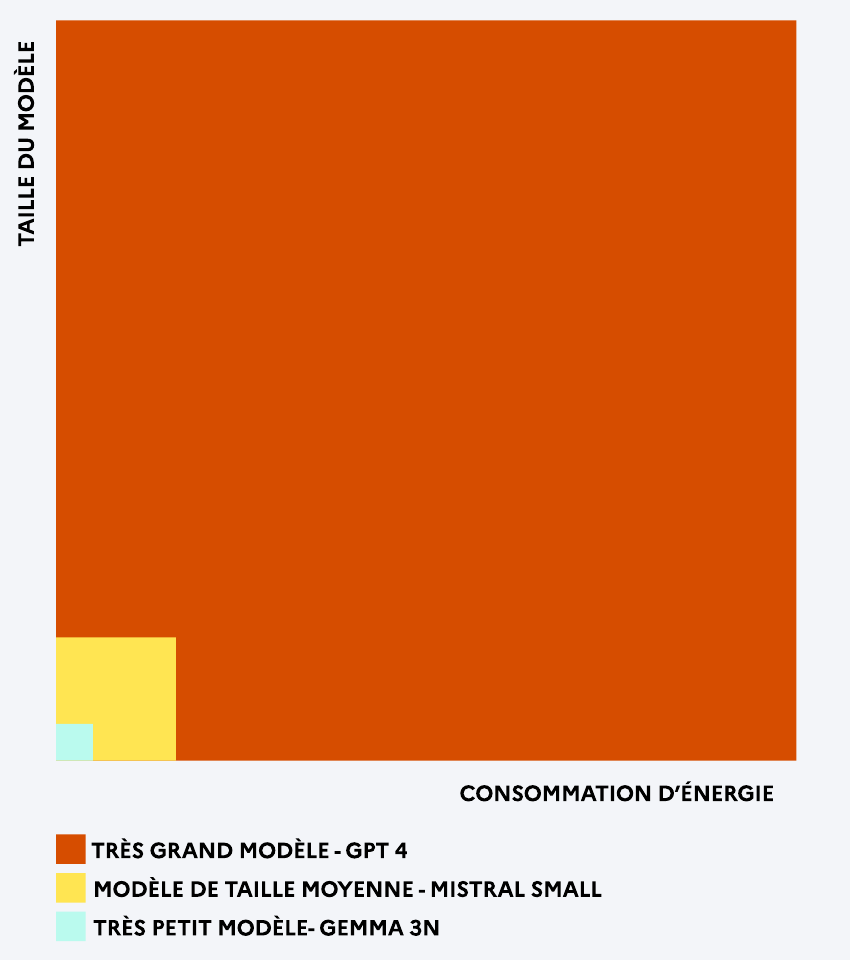

La consommation d'un modèle
Trois facteurs expliquent ce que coûte une requête en électricité.
Trois facteurs
Pour chaque requête, la consommation dépend de ces trois facteurs principaux.
Taille du modèle
En milliards de paramètres.
Longueur du texte
En jetons.
Architecture
Par exemple mélange d'experts (MoE) ou MatFormer.
La taille est traitée dans le support Qu'est-ce que la taille d'un modèle ?. Ici, on regarde les deux autres.
Ce que fait la taille

Graphique — Conseil National du Numérique, « 20 cartes pour aborder l'impact énergétique de l'IA générative ».
Les « jetons »
La longueur du texte produit par un modèle de langage se compte en jetons (tokens). Un jeton est une unité de base, qui peut couvrir une ou plusieurs lettres selon leur fréquence d'apparition ensemble dans la langue.
« Salut »
1
jeton
« Salut, ça va ? »
5
jetons
À quoi ça sert
Découper le texte en morceaux que l'IA peut traiter, compter ce qu'elle peut traiter d'un coup, et calculer le coût d'utilisation.
Exemples du support d'origine. Sur compar:IA, un jeton vaut à peu près quatre lettres.
Les « mélanges d'experts »
Un modèle mélange d'experts (Mixture of Experts) contient plusieurs experts, mais n'en active qu'un par jeton.
Avantages
- Moins de puissance de calcul nécessaire.
- Donc moins d'électricité consommée.
- Donc moins cher à utiliser.
Désavantages
- Prend beaucoup de place dans la mémoire de la machine.
- Plus complexe à développer.
- Peut avoir des problèmes de généralisation.
Le chemin d'un jeton
Entrée → modèle de routage, qui choisit l'expert le plus approprié → expert → sortie.
Exemples cités : Mistral/Mistral 8x7B, DeepSeek/DeepSeek V3, Meta/Llama 4 Scout.
Paramètres au total, paramètres actifs
Il faut charger tous les paramètres en mémoire, mais le calcul n'en traverse qu'une partie à chaque jeton. Les deux nombres ne mesurent donc pas la même chose : l'un dit le matériel qu'il faut, l'autre l'électricité qu'on dépense.
C'est exactement ce que dit la ligne « Dont N mds actifs » sur la fiche d'un modèle dans compar:IA.
DeepSeek V3 en est un bon exemple : 671 milliards de paramètres au total, dont 37 milliards actifs par jeton.
Comptes publiés par DeepSeek pour DeepSeek V3. La ligne « Dont N mds actifs » n'apparaît que pour les modèles ouverts en mélange d'experts.
Ce que tout cela donne à l'écran
Taille, longueur du texte et architecture se résument en une énergie et une lettre.
| Classe | Énergie pour un million de jetons de sortie |
|---|---|
| A | moins de 100 Wh |
| B | moins de 300 Wh |
| C | moins de 1 000 Wh |
| D | moins de 3 000 Wh |
| E | moins de 10 000 Wh |
| F | 10 000 Wh et au-delà |
Seuils compar:IA, estimation EcoLogits 0.10.2, PUE 1,2, mix électrique mondial moyen.
Ce qu'il faut retenir
- Un gros modèle coûte plus cher à faire tourner qu'un petit, à texte égal.
- Une réponse longue coûte plus qu'une réponse courte : le compteur, ce sont les jetons.
- Un mélange d'experts n'active qu'une part de ses paramètres, et consomme donc moins que sa taille totale ne le laisse croire.
Le support d'origine présentait l'écran comme une équation « taille × longueur du texte ≈ énergie », suivie d'équivalences en tonnes de CO₂. Cet écran n'existe plus : compar:IA affiche une énergie en mWh et une classe A–F, et ses équivalences sont en énergie, pas en carbone.